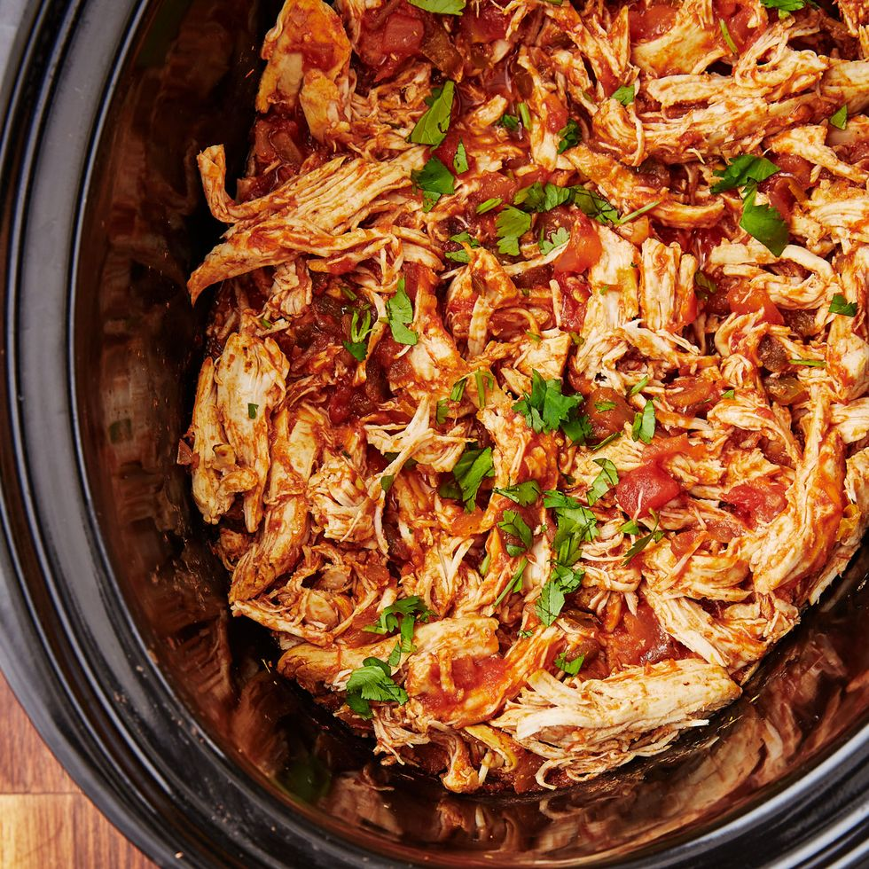

Salsa Chicken

Salsa and chicken in the crockpot
Can it get any easier? This meal is a two ingredient powerhouse
that will turn even the worst cook into a salsa master!
Ingredients
- 1 package of raw chicken
- 1 large jar of salsa
Steps
- Add the salsa and the chicken into the crockpot
- Put the crockpot on low for 6 hours
- Enjoy!